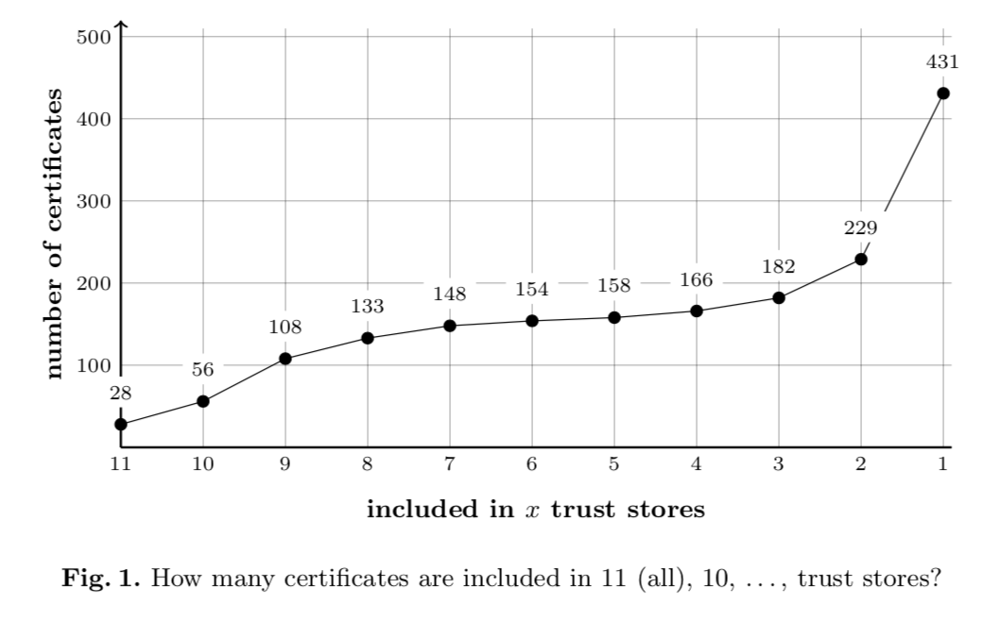

On x509 Certificates
X.509 Certificates have enabled the encrypted web we almost take for granted today. They have been a core component in web browsers establishing enough trust between arbitrary computers, possibly different countries and legal boundries, for us humans to facilitate and exponentially expand our economy to levels practically unthinkable twenty to thirty years ago. This trust has become an implicit requirement thrown into every device that connects to another computer and over the recent years we have seen that trust be stretched, violated and strengthed.
// TODO(adam): somewhere mention MITM attacks, Trustwave https://www.trustwave.com/Resources/SpiderLabs-Blog/Clarifying-The-Trustwave-CA-Policy-Update/ https://bugzilla.mozilla.org/show_bug.cgi?id=724929 // Leaked private keys // Cyberoam, https://blog.torproject.org/blog/security-vulnerability-found-cyberoam-dpi-devices-cve-2012-3372 // Trustico // Dell, http://www.dell.com/support/article/us/en/19/SLN300321 // etc.. // Somewhere, mention 600-650 total CA's // but that's consolidated a bunch, mention CCADB links and consolidation tracking effortCertificates are powerful, but their power comes with responsability which, while checked, is hard for even a "power user" (someone with intermediate or above knowledge of a device) to do much about. They're typically left to manual and inconvenient solutions to audit or reduce their trust willingness. I'm building a tool, cert-manage, which attempts to give power users much easier access into how much trust they're extending onto the internet.
Companies are the primary brokers of trust on the internet. They are the parties which generate and sell certificates and some act with fantasic responsibility while others have been careless. There are a few volunteer organizations created to publically audit and discuss the latest findings around certificates. The mozilla.dev.security.policy group and CA/Browser Forum are the primary orchestrators.
In order to discuss much more about certificates requires explaining them a bit. When your browser wishes to load a webpage from a webserver over a secure connection (e.g. HTTPS websites) it must do so by having the server present its "certificate chain", e.g. a list of certificates, that your browser processes to verify trust. Your browser has a set of "root certificates" preloaded into it and will use them to find an unbroken link between a root certificate and the certificates presented by the server. This exact process is massively complex and not a subject of this article, but you can read more on the Mozilla NSS Internals page. // TODO(adam): better link?? // TOOD(adam): image?
These root certificates are generated and managed by Certificate Authorities (CA's) and such are under various policies from browser vendors (e.g. Apple, Google, Mozilla (Firefox), and Microsoft) who choose to include (or remove) them from their browsers. A CA having it's certificates included (or not) in the browsers essentially determines if the CA is able to sell its certificates. With the power browsers have they can require external audits of Certificate Authorities or request detailed explanations if problems arise.
Browser leverage has been used to revoke trust in, at the time, one of the largest CA's in the business. When Symantec had repeated violations of multiple browser policies they set out a procedure of revoking the policy. Revoking this trust was done to protect consumers and the internet. A similar negligence was seen with WoSign (now called WoTrus) where repeated violations were allowed to continue ending in trust being revoked. This article is not attempting to burn the earth of certificates authorities, but instead offer a practical tool for further improvement regarding the implicit nature of consumer trust.
// TODO(adam): Discuss this tool vs // CRL / OCSP (delayed response, fail-open vs fail-closed) // CT / AKI / Key Transparency: delayed, logging/audit oriented, data source for minimal cert set // DNS DANE: requires DNSSEC rollout

TODO(adam): describe
FROM You Won’t Be Needing These Any More: On Removing Unused Certificates From Trust Stores !!!!
// Removing // "Roughly 34 % of all CA certificates are never used for signing HTTPS certificates." -- From "on removing", add biblography // CAge //
Links and Resources
- An Overview of NSS Internals
- CAge: Taming Certificate Authorities by Inferring Restricted Scopes
- By James Kasten, Eric Wustrow, and J. Alex Halderman
- Analysis of the HTTPS Certificate Ecosystem
- By Zakir Durumeric, James Kasten, Michael Bailey, J. Alex Halderman
- You Won’t Be Needing These Any More: On Removing Unused Certificates From Trust Stores
- By Henning Perl, Sascha Fahl, and Matthew Smith